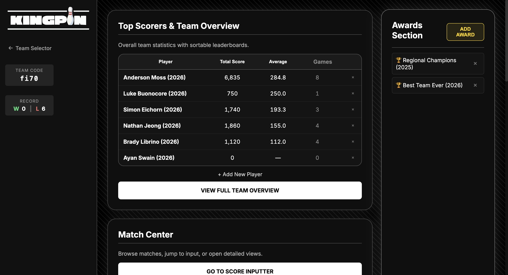

Bowling Stat Tracker
This project is a bowling team stat tracker website I built to organize and monitor player performance. It is designed to track team members, game results, and key stats so coaches and players can quickly view progress across a season.
